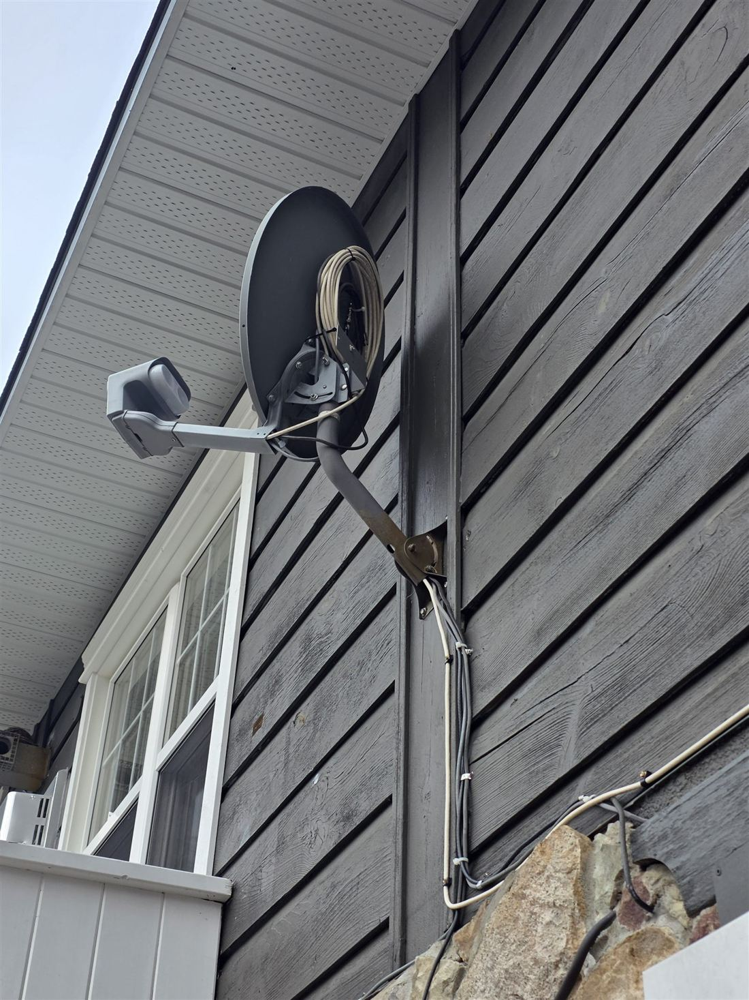

Satellite TV
Where cable never came down the road, satellite still works, as long as the dish is aimed right and stays that way.
We install, align and repair dishes for Bell, Shaw Direct and DirecTV. We mount solid, peak the signal for your exact coordinates, run clean cable to the receiver and set up the TV before we pack up. Dish knocked out by a storm or a falling branch? We re-align it.
- New installs and provider switches
- Re-alignment after wind, snow and ice
- Homes, seasonal cottages and businesses
- Starlink dish mounting and cable routing